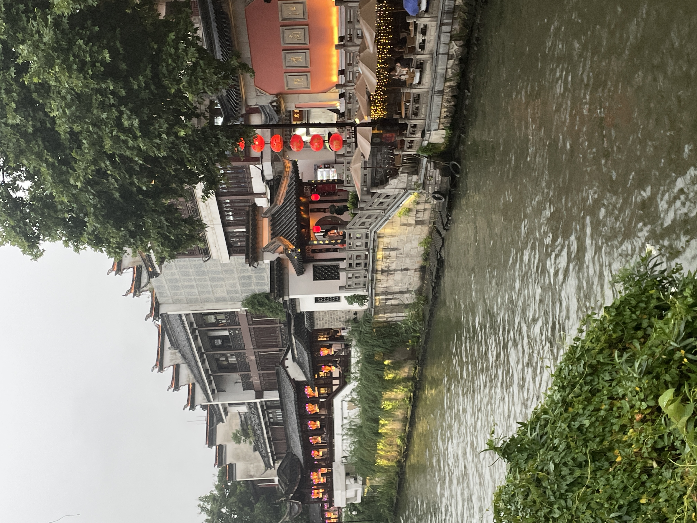
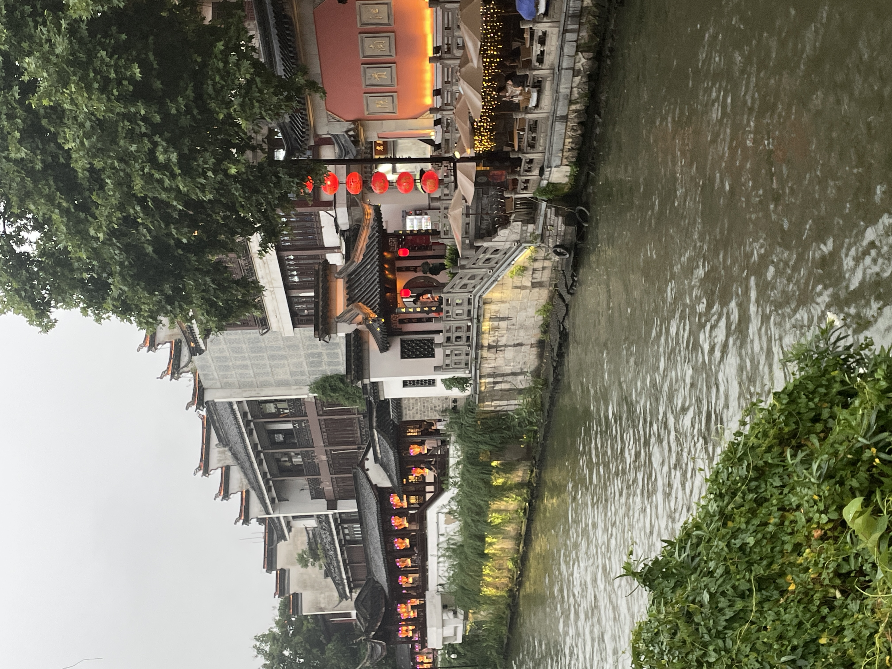

Travel
Banff


Geographical Location: North America
Banff National Park is located within the Rocky Mountains in Canada. The park spans 2,564 square miles. At Canada's oldest national park, you can see astonishing blue lakes, numerous snow-capped peaks, and diverse wildlife. Banff offers various activities like hiking, camping, and more! It is a dream destination for nature-lovers.
In addition to the magnificent nature of Banff, there are many things to explore in the downtown area. Banff Avenue and Bear Street have many stores to enjoy shopping. You can also learn of the natural and cultural history by visiting many museums and historical sites.
Photo Gallery


Barcelona


Geographical Location: Europe
Barcelona, is a beautiful city on the Northeastern coast of Spain that is the byproduct of a rich and artistic history with modern infrastructure. One of the main attractions of the city is its gorgeous architecture, often the work of world renowned architects such as Antoni Gaudi. Some of the most notable works are the modern Basilica of La Sagrada Familia, and the tranquil and eloquent Park Güell.
Much of Barcelona’s charm comes down to local culture, from diverse culinary offerings, to the sunny vacation-ridden atmosphere of the beaches, and even the symbolism of nationalism and independence that Barcelona residents display. The passion of the locals is unwavering, including in famous soccer matches by one of the sports greatest clubs: F.C. Barcelona, and in numerous local artistry events. It is no wonder why many travelers to Spain feel rejuvenated and fortunate enough to have experienced the city’s irresistibly strong culture and atmosphere.
Photo Gallery


Nanjing Fuzi-Qinhuai
 

Geographical Location: Asia
Nanjing is a popular city full of Chinese history and old traditional southern kinds of agriculture. As a northern people from China, Nanjing was the first city that I traveled to the region south of the Yangtze River. Confucius Temple - Qinhuai River is the most famous place to show the beauty of Nanjing.
Confucius temple has many traditional temple agricultures inside and many small shops about traditional Nanjing specialties and popular restaurants. There are also many colorful traditional lanterns which made the night of qinhuai more gorgeous. People can also take the “Hua Fang” ( a special kind of ship) to travel around the river and the whole scenery.
Photo Gallery


Giza


Geographical Location: Africa
Giza is located on the western bank of the Nile River, and it is a historically and culturally significant city in Egypt. It is home to the Great Pyramids and the Sphinx, which are ancient wonders of the world. These monuments also raise many questions about how advanced the ancient Egyptians truly were. Giza has recently become a bustling city full of tourists and adventurers seeking to see the ancient lure of Egypt.
Giza is a city that is very unique for a lot of reasons. One reason why is the ability to be a vibrant city that also is able to blend in its vast historical heritage within its city life. On one side you can see the pyramids , and on the other you can see the bustling nightlife of Egypt. This city is also very close to the capital of Egypt , which allows tourists to not only visit Giza , but they also gain the opportunity of going to the nearby capital and getting any work needed done.
Photo Gallery


Maldives


Geographical Location: Asia
Maldives is an archipelagic state and country in South Asia, situated in the Indian Ocean. It lies southwest of Sri Lanka and India, about 750 kilometres (470 miles; 400 nautical miles) from the Asian continent's mainland. The Maldives' chain of 26 atolls stretches across the equator from Ihavandhippolhu Atoll in the north to Addu Atoll in the south.
Maldives offers such an incredible combination of dazzling beaches, cerulean waters and fantastic diving that its opening up to travelers without limitless financial resources is definitely a cause for celebration.
Photo Gallery


Bora Bora


Geographical Location: Oceania
Bora Bora is a small South Pacific island located in French Polynesia. It is renowned as one of the world's most beautiful tropical paradises. Bora Bora is home to famous crystal clear waters, stunning coral reefs, and luxury overwater bungalows. Visitors have many opportunities for snorkeling, diving, and relaxation.
The island's central feature is the striking Mount Otemanu, a dormant volcano enveloped in lush tropical foliage. Mount Otemanu is the highest point and the centerpiece of Bora Bora's sublime landscape. This volcanic rock, with a peak that reaches 727 meters, rises from clear, turquoise waters. Though it's not climbable due to its steep, loose rocks, there are tours available by boat, jeep or helicopter for close-up views. These stunning perspectives of Mount Otemanu, surrounded by the tropical paradise of Bora Bora, create truly breathtaking experiences for visitors.
Photo Gallery


Amsterdam


Geographical Location: Europe
Amsterdam, the capital city of the Netherlands, is renowned for its artistic heritage, expansive canal system, and narrow houses with gabled facades. It's a city of vibrant character where modern urban life melds seamlessly with its rich history. The city is known for its landmarks like the Van Gogh Museum, the Anne Frank House, and the Rijksmuseum. The Canal Ring and the UNESCO World Heritage site are also must-visit places. The city's charming neighborhoods are filled with an array of cafes, shops, and markets. Many people also enjoy biking around the city.
Instead of biking, people can explore the beauty of Amsterdam from its waterways by taking canal cruises. The canal cruise will sail through the UNESCO Canal Ring, allowing tourists to experience iconic 17th-century houses, centuries-old bridges, and picturesque houseboats. Many consider this a must-do part of the Amsterdam experience.
Photo Gallery